plot(
mtcars$mpg ~ mtcars$wt,
xlab = "Masse (1000 lbs)",
ylab = "Milage (miles / gallon)",
main = "Consommation des automobiles"
)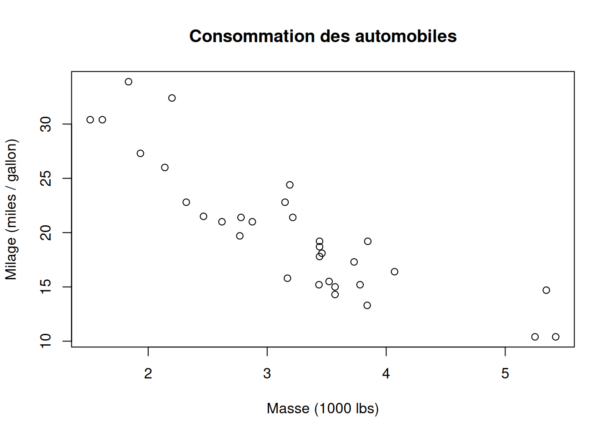
À la fin de cette capsule, vous serez en mesure de:
Les méthodes utilisées dans ce script sont avancées, mais chacune peut être facilement comprise en étudiant l’aide relative aux fonctions utilisées (voir capsule #3).
Veuillez noter qu’il est possible d’avoir plus d’une bonne réponse par question. Vous pouvez reprendre chaque exercice grâce aux boutons “Start Over”. Le bouton “Indice” est là pour être utilisé!
Associez à chaque graphique le problème principal que présentent les données et qui viole les conditions d’application de la régression linéaire simple :
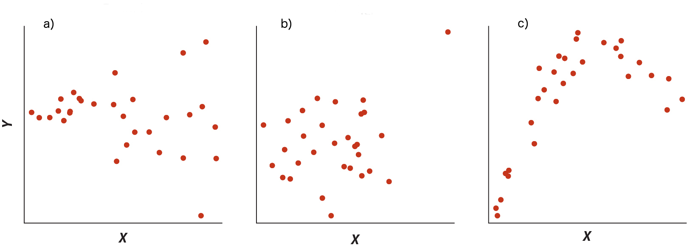
Voici un jeux de données. Il s’agit de variables mesurées sur 32 modèles d’automobiles et publiées dans le Motor Trend US magazine de 1974. Nous voulons prédire la consommation moyenne d’essence des modèles automobiles 73-74 selon leur masse.
plot(
mtcars$mpg ~ mtcars$wt,
xlab = "Masse (1000 lbs)",
ylab = "Milage (miles / gallon)",
main = "Consommation des automobiles"
)
Faites un histogramme des variables explicative mtcars$wt (la masse) et réponse mtcars$mpg (le milage) et décidez si leur distribution de fréquence semble suivre une loi Normale.
Faites la régression linéaire entre ces deux variables en utilisant la fonction lm().
lm(mtcars$mpg ~ mtcars$wt)
Call:
lm(formula = mtcars$mpg ~ mtcars$wt)
Coefficients:
(Intercept) mtcars$wt
37.285 -5.344 Finalement, on veut calculer l’intervalle de confiance à 95% des valeurs de milage attendues pour un véhicule de 1973-74 pesant 4750 lbs. En utilisant le modèle de régression suivant, complétez la function predict() avec la bonne option (remplacez les …) pour calculer les limites de cet intervalle :
Utilisez le paramètre “interval” = …
Tapez “Puromycin” dans l’aide de R pour en savoir plus (voir capsule #1).
Il s’agit d’un jeu de données fourni avec R et qui comprend des valeurs d’activité enzymatique mesurées pour différentes concentrations de substrat dans deux groupes de cellules, le premier traité avec un antibiotique inhibiteur de synthèse protéique (la puromycine), et le second un groupe contrôle non traité.
On va d’abord charger le jeu de données, puis le rendre accessible en premier plan dans la mémoire de R :
data("Puromycin")
PuromycinUne analyse de régression linéaire simple est utile lorsqu’il existe un lien de causalité entre deux variables quantitatives (numériques et mesurables) et que l’on veut prédire la valeur de la variable réponse (dépendante) selon la valeur de la variable explicative (indépendante).

L’analyse de régression linéaire simple fait partie des méthodes statistiques (classiques) qui utilisent les propriétés mathématiques des distributions des variables, comme les tests paramétriques (voir capsule #8).
À ce titre, les données à analyser doivent respecter plusieurs conditions d’application :
La première est évidemment celle que l’on doit respecter (presque) toujours dans les analyses statistiques de base : les échantillons doivent être aléatoires et indépendants,
La deuxième est incluse dans le titre de la méthode : il doit exister une relation linéaire entre les variables indépendante et dépendante, ce qui peut se vérifier graphiquement. Cette condition est par ailleurs vérifiée si les conditions suivantes sont aussi vérifiées,
L’homoscédasticité (homogénéité des variances) des résidus de l’analyse. Les résidus sont simplement la différence entre la valeur observée et la valeur prédite par le modèle de régression linéaire. Ces résidus doivent être répartis de façon aléatoire et homogène de part et d’autre de la droite de régression et…
…la distribution de ceux-ci doit respecter une distribution Normale de moyenne nulle, centrée sur la droite de régression. Il s’agit de la condition de la normalité des résidus de l’analyse.
La condition 2 peut bien sûr se vérifier a priori graphiquement, alors que les conditions 3 et 4 se vérifient a posteriori par des graphiques diagnostiques (voir capsule #9), mais aussi par des tests formels dont on verra un exemple ici.
L’analyse de régression linéaire utilise les propriétés mathématiques des données qui respectent ces conditions d’application pour déterminer les coefficients de la droite qui minimise l’erreur entre les valeurs observées de la variable réponse et les prédictions basées sur les valeurs de la variable explicative.
Nous pouvons illustrer ce principe avec le graphique ci-dessous :
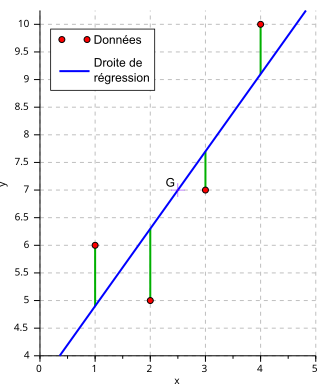
Ici la droite des moindres carrés (en bleu) est celle qui minimise les résidus (en vert), c’est-à-dire la différence entre les observations (en rouge) et la valeur prédite par la droite de régression (en bleu). La méthode mathématique minimise la somme des carrés des écarts (résidus), qu’on appelle aussi l’erreur.
Le but de cet exemple est de calculer et tester la significativité de la relation entre un taux de réaction enzymatique et la concentration de substrat.
On va d’abord vérifier l’allure de la relation entre les variables réponse (l’activité enzymatique) et explicative la concentration de substrat) :
# Indices pour les deux groupes de traitement
un <- Puromycin$state == "untreated"
tr <- Puromycin$state == "treated"
rate1 <- Puromycin$rate[un]
conc1 <- Puromycin$conc[un]
# Graphique en nuage de point pour le groupe témoin (pas de puromycine)
plot(
rate1 ~ conc1,
xlim = c(0, 1.5),
ylim = c(0, 210),
xlab = "Concentration de substrat (ppm)",
ylab = "Taux de réaction enzymatique (#/min/min)",
main = "Vélocité de réaction enzymatique"
)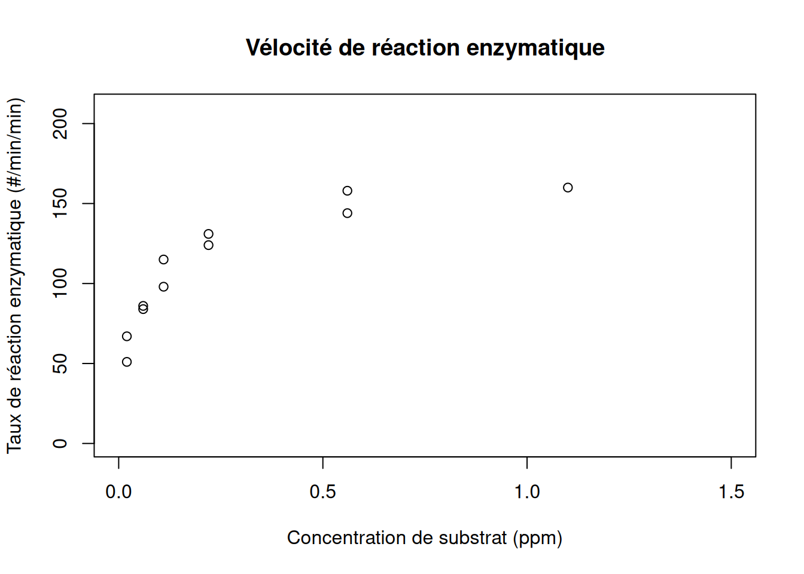
Il apparaît évident que la relation entre lesvariables n’est pas linéaire, mais notre connaissance de la cinétique enzymatique nous permet de comprendre qu’on pourrait obtenir une relation linéaire en transformant les valeurs de concentration en log() !
# Graphique en nuage de point pour le groupe témoin (pas de puromycine)
plot(
rate1 ~ conc1,
xlim = c(0.01, 1.5),
ylim = c(0, 210),
xlab = "Concentration de substrat (ppm; échelle log)",
ylab = "Taux de réaction enzymatique (#/min/min)",
main = "Vélocité de réaction enzymatique",
log = "x"
)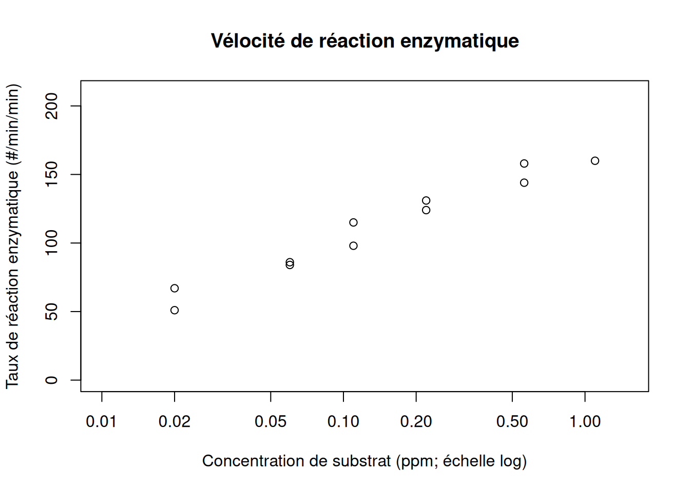
Ici l’utilisation de l’argument (option) log = 'x' permet de représenter automatiquement nos données selon une échelle logarithmique sur l’axe des abscisses.
On constate qu’on semble bien avoir une relation linéaire entre les concentrations de substrat transformées par un logarithme et les taux de réaction enzymatique.
Pour la suite de nos analyses, nous allons créer une variable transformée pour les valeurs de concentration avec laquelle nous pourrons travailler.
L’analyse de régression linéaire fait partie de la grande famille des “modèles linéaires” en statistiques, d’où le nom de la fonction utilisée dans R : lm()
# Procéder à l'analyse de régression linéaire simple (une seule variable explicative)
# ATTENTION à bien utiliser les valeurs transformées pour les concentrations de substrat
logc1 <- log10(conc1)
regl <- lm(rate1 ~ logc1)
# Visualisation des résultats de l'analyse
summary(regl)
Call:
lm(formula = rate1 ~ logc1)
Residuals:
Min 1Q Median 3Q Max
-8.034 -5.988 -2.677 7.616 9.969
Coefficients:
Estimate Std. Error t value Pr(>|t|)
(Intercept) 164.588 4.266 38.59 2.62e-11 ***
logc1 62.129 4.156 14.95 1.16e-07 ***
---
Signif. codes: 0 '***' 0.001 '**' 0.01 '*' 0.05 '.' 0.1 ' ' 1
Residual standard error: 7.575 on 9 degrees of freedom
Multiple R-squared: 0.9613, Adjusted R-squared: 0.957
F-statistic: 223.5 on 1 and 9 DF, p-value: 1.161e-07Les résultats de cette analyse sont très riches en informations :
Tout d’abord, comme pour tous les tests semblables dans R, on vous rappelle le modèle linéaire testé, c’est à dire ici le taux de réaction enzymatique en fonction du log de la concentration de substrat :lm(formula = rate1~ logc[un])
Ensuite on vous présente un résumé de la distribution des valeurs des résidus : Residuals
Puis viennent les informations relatives aux coefficients de la régression linéaire : Coefficients
Deux valeurs sont principalement d’intérêt dans la dernière section : Adjusted R-squared et F-statistic
On peut visualiser très simplement notre droite de régression sur le graphique de nos données avec la fonction abline():
# Ajout de la droite de régression suite à l'analyse
abline(regl, lwd = 2)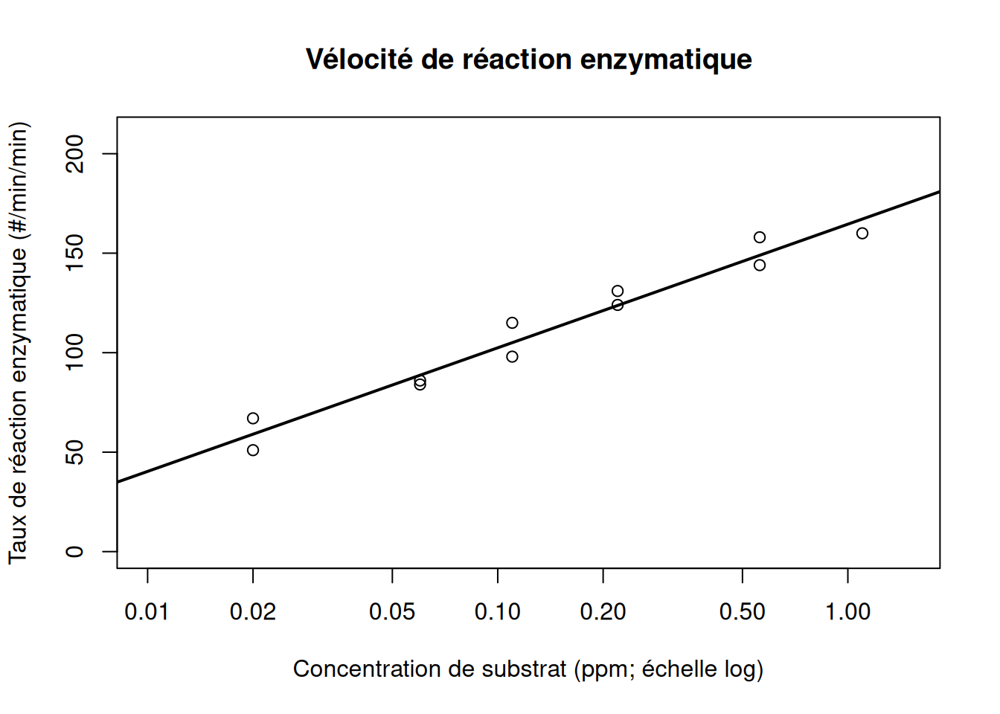
On peut faire deux types de vérification (voir capsule #9) : visuelle et statistique
plot(regl, which = c(1, 2, 4))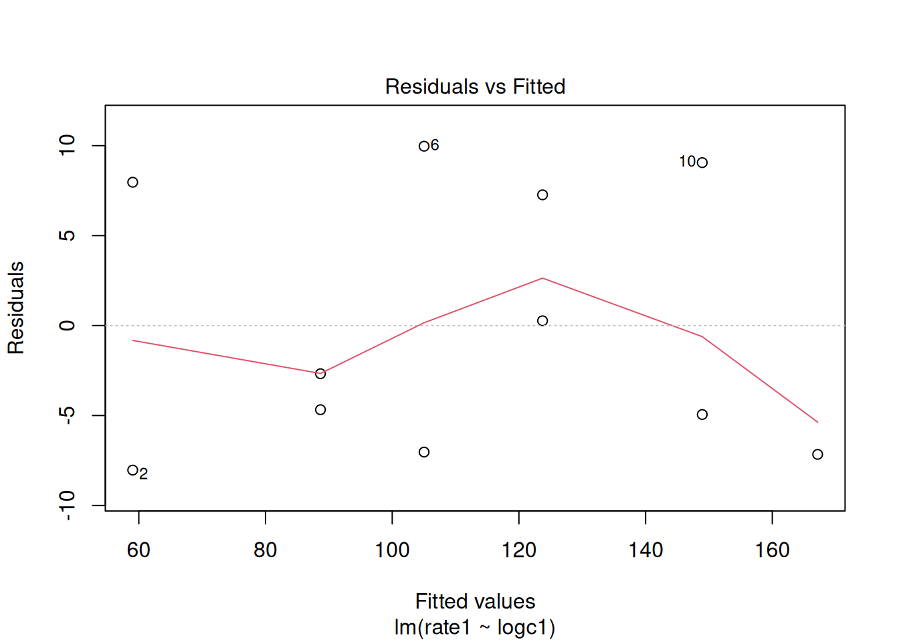
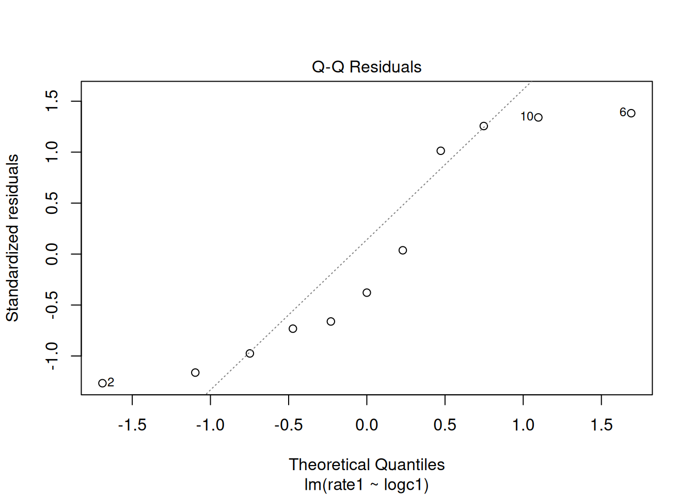
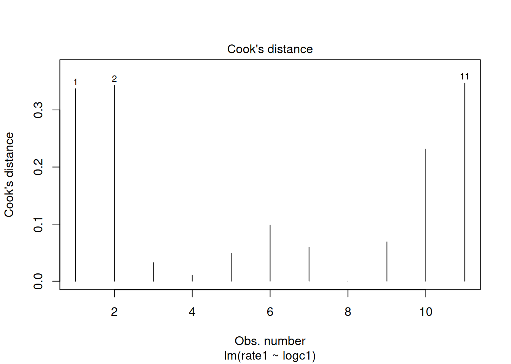
Nous utilisons les 3 graphiques diagnostiques produits automatiquement par la fonction plot(), comme on l’a vu dans la capsule #9.
Le premier nous montre que les résidus de la régression présentés en fonction de la valeur “prédite” par le modèle linéaire de régression sont apparemment répartis symétriquement et aléatoirement de part et d’autre de l’horizon 0.
Le deuxième semble montrer par contre que certaines valeurs de résidus ne suivent pas tout à fait une distribution Normale (pas alignés sur la droite).
Le troisième montre finalement qu’aucune observation ne produit une valeur de distance de Cook > 0.5, ce qui confirme que notre analyse n’est pas biaisée par une ou quelques valeurs extrêmes. Une valeur > 0.5 est problématique.
Il apparaît donc de nos graphiques diagnostiques qu’en général nos données semblent respecter les conditions d’application, même si les conclusions ne sont pas toutes claires !
Le nombre de valeurs analysées est faible (11), donc les conclusions des graphiques diagnostiques sont nécessairement moins claires que pour des analyses avec de grands nombres de points.
La fonction gvlma() permet de vérifier en une fois si l’ensemble des conditions d’applications mathématiques sont remplies, grâce à plusieurs tests statistiques. Exemple :
library(gvlma)
gvlma(regl)
Call:
lm(formula = rate1 ~ logc1)
Coefficients:
(Intercept) logc1
164.59 62.13
ASSESSMENT OF THE LINEAR MODEL ASSUMPTIONS
USING THE GLOBAL TEST ON 4 DEGREES-OF-FREEDOM:
Level of Significance = 0.05
Call:
gvlma(x = regl)
Value p-value Decision
Global Stat 1.925e+00 0.7495 Assumptions acceptable.
Skewness 1.926e-01 0.6608 Assumptions acceptable.
Kurtosis 1.183e+00 0.2767 Assumptions acceptable.
Link Function 5.494e-01 0.4586 Assumptions acceptable.
Heteroscedasticity 6.932e-05 0.9934 Assumptions acceptable.N’oubliez pas d’installer la librarie gvlma à l’aide de la fonction install.packages().
Encore une fois, les résultats de cette analyse sont riches en informations :
D’abord on vous rappelle le modèle linéaire testé : Call
Ensuite les valeurs estimées des coefficients de la régression : Coefficients
Puis on clairement ce que cette fonction fait : ASSESSMENT OF THE LINEAR MODEL ASSUMPTIONS
Finalement, on détaille les résultats des différents tests sur les résidus. Chacun doit être interprété de la même façon : une statistique de test calculée Value, suivie de la p-value associée p-value et de la décision suggérée (Assumptions acceptable. ou Assumptions NOT satisfied!)
Tous ces tests graphiques et statistiques restent des aides à la décision. Vous devez exercer votre jugement en tout temps pour décider si vous pouvez vous fier aux résultats de vos analyses.
Comme on l’a indiqué dès le début de cette capsule, la régression linéaire permet de faire des prédictions, c’est-à-dire d’estimer la valeur moyenne que devrait avoir une variable réponse pour toute valeur de la variable explicative.
Toutefois cela est vrai dans les limites observées de la variable explicative, autrement dit la régression permet de faire avec confiance de l’interpolation, et elle ne devrait être utilisée qu’avec grande prudence pour faire de l’extrapolation.
Il est très facile de faire une telle prédiction. En fait, il s’agit simplement d’utiliser l’équation de la droite de régression y = a + bx, avec a l’ordonnée à l’origine et b la pente.
On peut toutefois utiliser la fonction predict() si on veut faire plusieurs prédictions facilement, par exemple.
# Predire les taux de réaction enzymatique moyens pour des concentrations de
# substrat de 0.3, 0.35 et 0.4 ppm.
conx <- log10(c(0.3, 0.35, 0.4)) # Il ne faut pas oublier la transformation !
predict(regl, newdata = data.frame(logc1 = conx), interval = "confidence") fit lwr upr
1 132.1027 126.0071 138.1983
2 136.2620 129.8104 142.7136
3 139.8650 133.0728 146.6571Les résultats de la fonction predict() donnent:
interval =L’ordre des lignes suit l’ordre des valeurs dans le vecteur x fourni à la fonction.
On remarque ici que la valeur de l’argument interval = "confidence". Ceci permet de calculer l’intervalle de confiance à 95% autour de la moyenne prédite. Ça se traduit par ce genre de courbes :
# Ajout des intervalles de confiance
xint <- seq(-2.1, 1.1, 0.1)
pred1 <- predict(regl, newdata = data.frame(logc1 = xint), interval = "confidence")
lines(10^xint, pred1[, 2], lty = 2, lwd = 2)
lines(10^xint, pred1[, 3], lty = 2, lwd = 2)
legend(
"topleft",
legend = "Intervalle de confiance à 95%\nautour de la moyenne prédite",
lty = 2,
lwd = 2,
bty = "n"
)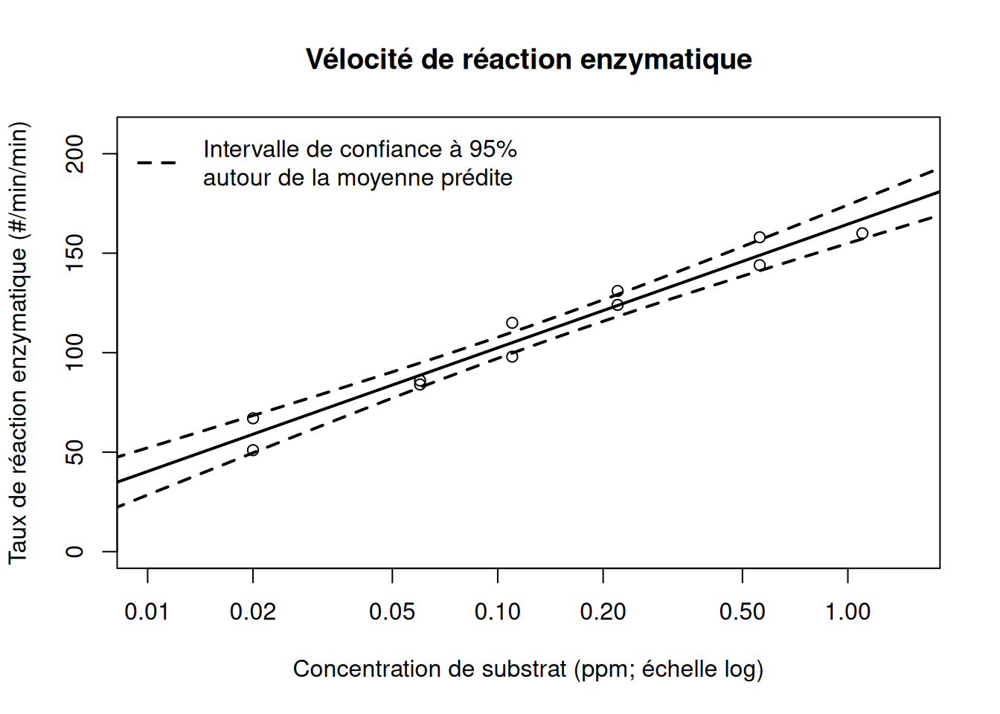
Il est de plus possible d’estimer l’intervalle à l’intérieur duquel 95% des valeurs individuelles de la variable réponse observée devraient se retrouver d’après l’analyse de régression.
Ceci peut être utile pour détecter des valeurs individuelles extrêmes, ou prédire une plage de valeurs possibles de la variable réponse pour une valeur encore jamais observée de la variable explicative, par exemple.
Il faut alors spécifier une autre valeur à l’argument interval : interval = "prediction". Ceci donne :
# Ajout des intervalles de confiance
pred1 <- predict(regl, newdata = data.frame(logc1 = xint), interval = "prediction")
lines(10^xint, pred1[, 2], lty = 2, lwd = 2, col = "red")
lines(10^xint, pred1[, 3], lty = 2, lwd = 2, col = "red")
legend("topleft", legend = "Intervalle de confiance à 95% de la\ndistribution des valeurs individuelles\nd'activité enzymatique", lty = 2, lwd = 2, col = "red", bty = "n")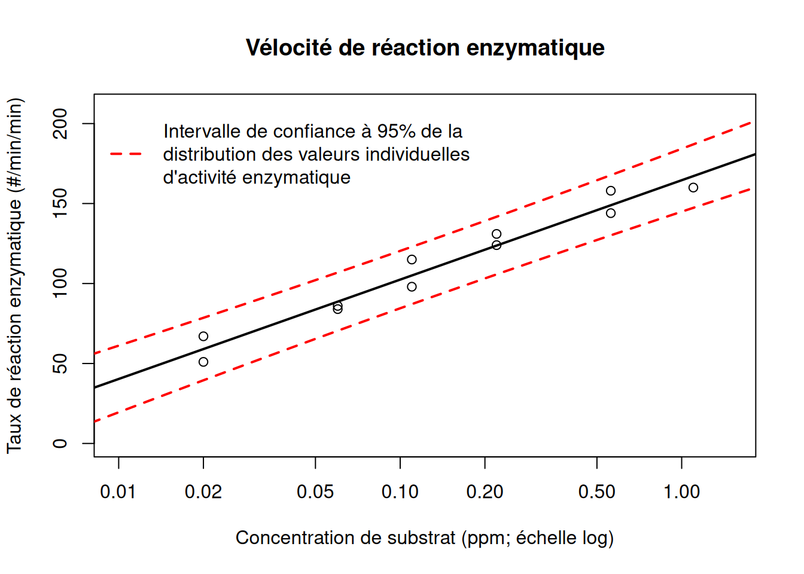